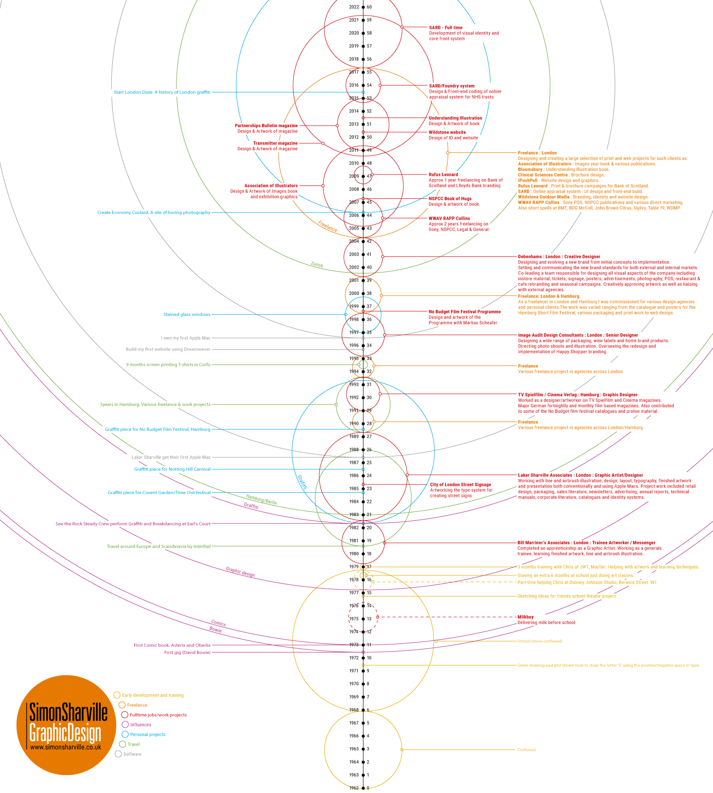

Profile
About
I am a London based graphic designer and chair wrestler, specialising in brand & identity, brochure & book design, magazines, illustration and website design.
From branding, publishing and corporate design to brochures and websites, my skills as a designer mean I understand the structure and visual language needed in creating a clear message that can communicate your business or product to a wider audience.
I design and build for both print and web, have a deep knowledge of the Adobe Creative Suite and good skills in HTML, CSS, SCSS, Bootstrap, Flexbox and Wordpress making me well suited to working across online and offline. I come from a strong artwork background and can deliver a project from initial concept through to final publication.
Contact
For any work related queries, please email me at:
enquiries@simonsharville.co.uk
Availability
Currently Unavailable to take on any projects
Downloads
Testimonials
“Simon is a great designer who knows his tech. Personally I prefer this to techs who know design.”
Kevin Monk - SARD Managing Director
“Hi Simon,
Just wanted to let you know that we have got the printed versions of the banners and the brochures and they look amazing. You have done a brilliant job, so a massive thank you for that. I look forward to working with you more with other design work. Best wishes”
Philip Bottle - SARD Sales Director
“Wow, you’re a proper designer, though, Simon. Amazing breadth and I love your clinical approach to the grid and technology, as well as the laughingbag – brilliant! And the Transmitter magazine is terrific, clever way of uniting disparate approaches in each edition”
Martin Colyer - Writer, Art Director, and Musician - Website
“Simon has an exceptional design talent and has delivered a suite of seamlessly integrated designs across mixed media. From the outset he understood the brief and immediately delivered against this, developing exciting new concepts and delivering projects to time and budget. His many years experience working across different clients and projects has also facilitated the efficient delivery of projects, communicating clearly and drawing on this experience to provide valuable support to my thinking around broader aspects of the project.”
Russell Turner - Windobox Marketing
“An experienced graphic designer who understands the complete creative process from concept to final output. Trained in typographic design, illustration and layout and possessing a high level of proven technical ability as a print & web designer.”
Frank Ingram - Copywriter
Visual timeline
As well as a conventional CV, I have created a confusing visual timeline of my career, influences and personal projects.
